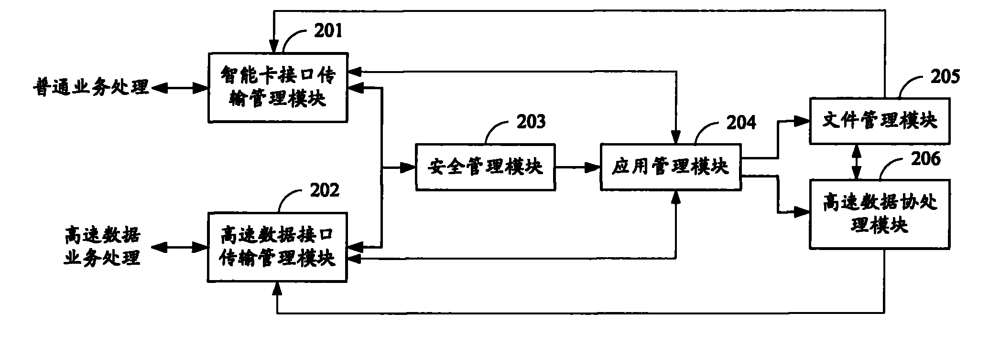

发明名称--双接口智能卡的片内操作系统及其实现方法
| 申请号 | CN200810223677.6 | 申请日 | 2008.10.06 | ||
| 公开（公告）号 | CN101370079A | 公开（公告）日 | 2009.02.18 | ||
| IPC分类号 | H04N5/00; G06K19/07; H04N7/16 | 申请（专利权）人 | 普天信息技术研究院有限公司; | ||
| 发明人 | 张海英;廖泉;张旭;曹会扬;廖剑;姜涌; | 优先权号 |
摘要:
本发明公开了一种双接口智能卡的片内操作系统及其实现方法，该系统包括：智能卡接口传输管理模块、高速数据接口传输管理模块、安全管理模块、应用管理模块、文件管理模块和高速数据协处理模块；本发明方法通过对接收到的命令头的安全机制检查后，判断业务类型，如果命令头表明业务类型为普通数据业务，则进行普通数据业务处理；如果命令头表明业务类型为高速数据业务，则进行高速数据业务处理。本发明的片内操作系统及其实现方法可以应用于具有高速数据接口的双接口智能卡，摆脱了传统智能卡接口的条件束缚，使得高速数据的传输成为可能。
摘要附图:
